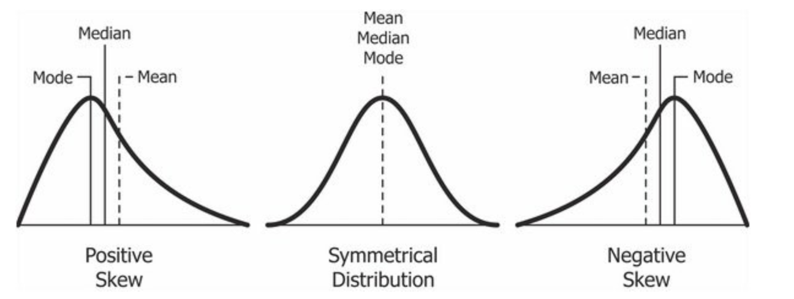

introduction
In this tutorial we’re going to learn how to plot data with
ggplot2. Plots are a good way to explore trends in the
data.
Since it is part of the tidyverse, it has an intuitive
structure it has three main parts:
- A data set
- A coordinate system
- Geoms, which are visual marks that represent the data
Creating a GGPlot graph is a three part process:
- Specifying data
ggplot(data = data_set_to_plot)
- Mapping aesthetics
ggplot(data = data_set_to_plot, aes(x = variable_to_plot))
- Adding a geometric layer
ggplot(data = data_set_to_plot, aes(x = variable_to_plot)) + geom_TYPE()
A list of geom_types is available here GGPlot
Cheat Sheet
For this tutorial we’re going to use the Palmer Penguins package, which we’ll need to install before loading.
## install palmer penguins
## remember you only need to install packages once
install.packages("palmerpenguins")## Warning: package 'palmerpenguins' is in use and will not be installed## load palmer penguins library
library(palmerpenguins)Let’s take a look at the data using the glimpse()
function. glimpse() is part of the tidyverse()
package. It shows the columns horizontally, so you can see all of the
columns at once.
Go ahead and try it below. Use the glimpse() function on
the penguins data set.
glimpse(penguins)The data has 344 rows and 8 columns including:
- species
- island
- bill_length_mm
- bill_depth_mm
- flipper_length_mm
- body_mass_g
- sex
- year
Now that we have an overview of our data, let’s learn how to plot it.
ggplot basics
The first step is to add a data layer. The first part is calling a
ggplot object and passing the data to it.
ggplot(data = penguins)This will create a basic, grey square. Next, we need to add an aesthetic layer. It is abbreviated aes().
ggplot(data = penguins,
aes(x = species))In this example, we’re going to add an x axis for species. Finally, we need to add a geometric layer.
In our example, we’ll create a bar plot for different penguin species.
NOTE: The geometric layer is outside the
parenthesis. We add it to the ggplot using an addition sign:
+.
ggplot(data = penguins,
aes(x = species)) +
geom_bar()adding color
We can add color to our graph by adding
fill = variable_to_use in the aes function.
GGPlot will pick different colors based on the variable you use as the
fill option.
Give it a try using the species variable!
ggplot(data = penguins,
aes(x = species, fill = species)) +
geom_bar()GGPlot colors are very customizable. Some colors are more accessible than others. People with red-green color blindness may have a difficult time reading the bar chart we just made. You can find more colors here.
Adding secondary colors
We aren’t limited to the same variables for the data and the fill. We
can fill by other variables, too. All we have to do is change the
fill = variable_to_use part of our ggplot call.
Give it a try by passing island to the
fill = argument below. This will color the graph based on
the island where the penguins are from.
ggplot(data = penguins,
aes(x = species, fill = island)) +
geom_bar()using standard measures
The chart we just made uses the total count of penguins by species
and colors it by island. Sometimes our data isn’t as easy to read as the
penguins data set. For example, how many penguins of the
Adelie species come from Biscoe? When the bars don’t align directly with
the numbers, it’s difficult to read.
Let’s standardize the y-axis (vertical) to show the percentage instead of count. Percents can range from 0 to 1 (0 to 100%) and are a bit more intuitive to read.
First, we’ll add in our original ggplot that we made in the previous section:
ggplot(data = penguins,
aes(x = species, fill = island)) +
geom_bar()We’ll need to change a few things to get it to show the percentages rather than the counts.
First, we’re going to use the tidyverse pipe %>% to
chain together our arguments. We’ll start by using
penguins %>% to tell R that we want to use the
penguins data set.
Second, we’ll start our ggplot call on the next line. We need to add
our ggplot layer by using ggplot().
- Inside the ggplot parenthesis, we’ll specify the
aesthetics using
aes(). This will be exactly like before, where we’ll usespeciesfor the x-axis (horizontal) andislandfor the the fill.
Third, we’re going to add a new line called ylab, which
stands for y-axis label. We’re going to rename the y-axis to say
"Percent".
Finally, inside the geom_bar() call we’re going to use
the position = argument to change how the data is
displayed. By setting position = "fill" we are telling
ggplot to set the y-axis to range from 0-1 (or 0-100 percent).
Try and combine the pieces to make the new ggplot:
penguins %>%
ggplot(aes(x = species, fill = island)) +
ylab("Percent") +
geom_bar(position = "fill")Our new plot shows the percentage of penguins in each species and location.
quick lesson on distributions
Sometimes bar charts aren’t helpful for visualizing data density. Density represents the distribution of a numerical variable. Essentially, we’re looking at how spread out our data is.
In statistics, we often assume that data has a normal distribution. A normal distribution is symmetrical where the extreme values are equal distance from the median value, as in the middle graph below.
Data can also be skewed in a positive or negative direction.
In a positive skew (or right-skew), the most extreme values are positive and the tail of the curve is mostly in the positive.
In a negative skew (or left-skew), the most extreme values are negative and the tail of the curve is mostly negative.

It’s important to know how our data is distributed, because it affects the kinds of predictions we can make.
If our data is skewed to once side or another, we may have outliers which suggest that we may have to transform the data to make it normally distributed.
We can use histograms and density plots to test whether our data is skewed and whether it has a normal density.
density plot
Two main plots for looking at data density are the box plot and violin plot.
box plots
A box plot, also known as a box and whisker plot, shows us the five number summary for our data.
We can get these numbers by using the summary() function
on a specific variable.
For example, let’s get the five number summary for the penguins’ bill
length. In the box below use the summary() function on the
bill_length_mm variable. Don’t forget! to reference a
specific variable you use the $ operator.
summary(penguins$bill_length_mm)We can see the numbers that indicate data distribution and density, plus how many NA values we have. NA stands for “Not Available” which means we are missing 2 values.
- Min:
- This is the shortest bill length in our data set is 32.10 millimeters
- 1st Qu.:
- This is the first quartile. It shows that 25% of our data is less than 39.23
- Median:
- The median value in our data is 44.45
- 50% of our values are below 44.45 and 50% are above 44.45
- Mean:
- The average bill length in our data is 43.92 mm
- 3rd Qu.:
- This is the third quartile. It shows that 75% of our data is less than 48.50 mm.
- Max:
- The maximum bill length in our data is 59.60 mm
These numbers are good to have, but they’re not very intuitive. It’s difficult to picture whether this is distributed evenly.
violin plots
Violin plots are good for visualizing the distribution of data for different groups. For example, we want to check the distribution of the data for our different species of penguins. It could be that one species of penguins has longer bills than other species.
We’re going to create a box and whisker and violin plot at the same time. This will allow us to better see how the data is distributed.
Start with the same penguins %>% ggplot(aes()) call
that we used before.
Inside the aes() function, we’re going to tell ggplot
that we want to use species for the x-axis and
bill_length_mm for the y-axis.
Then outside the parentheses, we’re then going to add +
a call to geom_violin(). Inside this call we want to color
the violin plot by species by using the
aes(color = species) argument.
Finally, we’ll add + the boxplot by calling
geom_boxplot(). We’re going to specify that we want the
width to be 0.3. You can change this to any number you
want, but 0.3 is the most visually appealing for this data.
We’re also going to use the same aes(color = species)
argument in geom_boxplot that we did with
geom_violin()
Give it a try below!
penguins %>%
ggplot(aes(x = species,
y = bill_length_mm)) +
geom_violin(aes(color = species)) +
geom_boxplot(width = .3, aes(fill = species))how to interpret the violin boxplot
Now that we’ve plotted the violin-boxplot, how do we interpret it?
Remember, the box plot visualizes the five number summary that we got
using summary(penguins$bill_length_mm)
The thick black line in the middle of the box represents the Median for each species.
From our plot we can see that the Adelie penguin has a median bill length of about 38 mm. The Chinstrap penguin has a median bill length of about 50 mm. The Gentoo penguin has a median bill length of about 48 mm.
The third quartile range is the part of the box above the thick black line. The first quartile is the part of the box under the thick black line.
The wavy bits around the boxes is the violin plot. The violin plot shows us where most of the values in our data are located.
We can see from the Adelie violin plot that most Adelie penguins have a bill length close to the median value. For the Chinstrap penguin, the violin plot is more wavy. This indicates that the bill lengths of the Chinstrap penguin are mostly around 50 mm but there are quite a bit around 45 mm. The Gentoo penguin has bill lengths mostly around the median, but there are some extreme values as shown by the long tail of the plot on top.
visualizing variable relationships
What happens if we want to visualizing the relationship between two or more variables? For example, let’s say we wanted to know the relationship between a penguin’s bill length and the depth of its bill (or height).
To visualize the relationship between two numerical variables we’ll need to create a scatterplot. Scatterplots show the individual data points across an x and y axis.
To make a scatterplot, we’ll need to change a few things in our
ggplot call. It will start the same way:
penguins %>% ggplot(aes()), but we’ll need to specify
both the x-axis and the y-axis in the aes() function. We’re
also going to switch to using geom_point() instead of
geom_box().
Give it a try below!
penguins %>%
ggplot(aes(x = bill_depth_mm,
y = bill_length_mm)) +
geom_point()how to interpret scatterplots
Scatterplots are good at identifying patterns in the data, but how do we interpret the plot once we’ve made it?
Scatterplots can show whether there’s a positive, negative, or no correlation between our two variables. In our scatterplot, there’s a very weak positive correlation between bill length and bill depth. A weak positive correlation means that as bill depth increases, so does bill length. It’s a weak relationship because the points are pretty scattered.